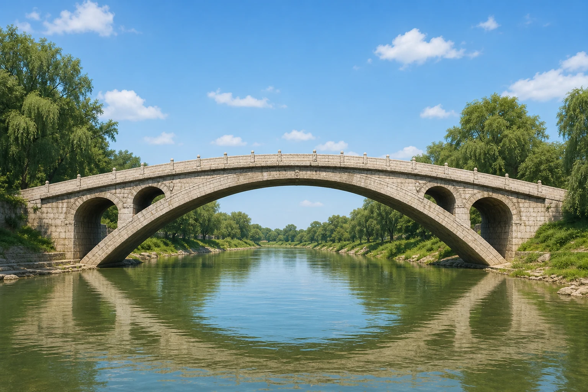
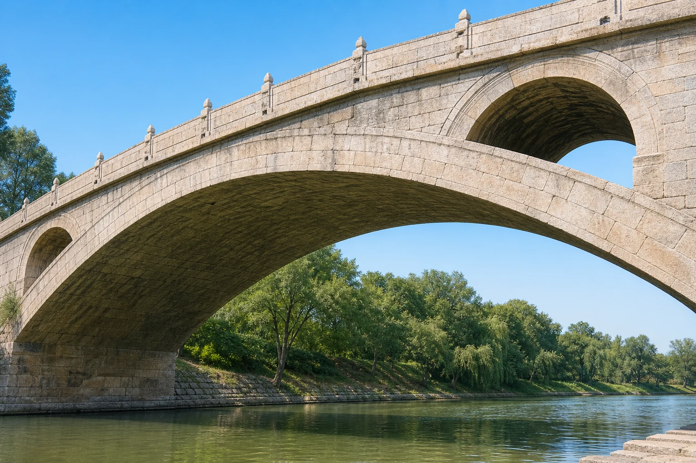

赵州桥：传说与石拱的真相
Zhaozhou Bridge: Legends and the Stone Arch
阅读难度 · 中等Reading level · Medium
Page 1
这枚驴蹄印有多老？
How Old Is This Hoofprint?

This is a modern imagined scene, not a photograph of the bridge deck. The hoofprint and wheel rut belong to folklore; similar marks seen on today's bridge were added during modern restoration.
如果有人指着赵州桥上的凹痕说：“看，这是神仙的毛驴踩出来的！”你会相信吗？当地传说中，张果老让毛驴驮着太阳和月亮过桥，柴王爷又推着装满名山的车上桥。桥被压得摇晃，鲁班便跳到桥下用手托住，于是桥面留下驴蹄和车辙，桥腹还留下手印。
这个故事在民歌《小放牛》中越唱越远，也表达了人们对好桥和好工匠的赞美。不过，鲁班生活的传说年代比赵州桥早了一千多年，他不可能是这座隋代桥的建造者。更让人意外的是，20世纪50年代大修更换旧桥面时，修缮者为了呼应传说，在新石板上人工磨出了车辙和驴蹄印。传说很老，不等于今天看到的痕迹也很老，更没有证据证明它们是古代的“减速带”。
那么，真正的建桥人是谁？一篇唐代碑铭把桥称为“隋匠李春之迹”，所以后人把设计和建造归功于隋代工匠李春。桥大约建于595年至605年之间，但没有隋代施工日记或完整图纸留下来，我们对李春的生平也几乎一无所知。这个名字有可靠的早期线索，却不该被扩写成一部有对话、有童年梦想的虚构传记。
Suppose someone points to a dent on Zhaozhou Bridge and says, “Look! An immortal's donkey made that print!” Would you believe it? In a local legend, the immortal Zhang Guolao loaded the sun and moon onto his donkey, while Lord Chai pushed a cart carrying famous mountains. Their impossible weight made the bridge shake, so the master builder Lu Ban leaped underneath and held it up. The story explains the hoofprint and wheel rut on top - and even handprints underneath.
The tale traveled widely in the folk song Little Cowherd. It shows how strongly people admired the bridge and great builders. But Lu Ban was said to have lived more than a thousand years before this Sui dynasty bridge, so he could not have built it. There is another surprise: during a major restoration in the 1950s, the old deck stones were replaced, and workers carved a wheel rut and hoofprint into the new surface to match the legend. An old story does not make the marks we see today ancient, and there is no evidence that they were an early “speed bump.”
Who, then, built the real bridge? A Tang dynasty inscription written after the bridge was built calls it “the work of the Sui craftsman Li Chun.” That is why the design and construction are credited to Li Chun. The bridge probably dates from about 595 to 605, but no Sui construction diary or complete blueprint survives, and almost nothing is known about Li Chun's life. His name rests on an important early clue; it should not be expanded into an invented biography filled with childhood dreams and conversations.
Page 2
一道压低的石头彩虹
A Low Stone Rainbow

This modern illustration shows the shallow main arch and four smaller arches, but its water, masonry, railings, and proportions are idealized rather than measured.
赵州桥又名安济桥，横跨今天河北赵县的洨河。主拱净跨约37米，从拱脚水平线到拱顶却只升高约7.2米。它不是高高的半圆，而只是圆周的一段，所以叫圆弧拱或割圆拱。浅弧让桥面坡度比较平缓，行人、马和车过桥都更方便。
石拱为什么不会直接掉进水里？修桥时，工匠先要搭起临时木架托住石块，再把楔形拱石一块块排成弧线。木架拆掉以后，每块石头受到向下的重量，同时挤压旁边的石头；这股压力沿着拱弧传向两端，最后交给坚实的桥台和地基。不是只有最中间一块“钥匙石”独自锁住全桥，而是整条拱和两端支撑一起工作。
浅拱也不是只占便宜。与较高的半圆拱相比，它会把更大的水平推力送向两岸，所以桥台和地基必须承受得住。赵州桥的巧妙，不是找到了不受力的魔法形状，而是让跨度、坡度、石拱和桥台互相配合。它保存了约一千四百年的设计历史，但这不代表同一批石头从来没有移动或更换。
Zhaozhou Bridge is also called Anji Bridge, meaning “Safe Crossing Bridge.” It spans the Jiao River in today's Zhao County, Hebei. The main opening is about 37 meters wide, but the top of the arch rises only about 7.2 meters above its starting level. Instead of forming a tall half circle, the arch uses only part of a circle. Engineers call this a segmental arch. Its low curve creates a gentler roadway for walkers, horses, and carts.
Why does a stone arch not simply fall into the river? Builders first erected a temporary wooden frame to hold the stones. Then they arranged wedge-shaped blocks along the curve. After the frame was removed, each stone was pulled downward by its weight but also pressed against its neighbors. Compression traveled along the arch into the abutments and ground at both ends. One “magic keystone” in the middle did not hold the bridge alone; the whole arch and both supports worked together.
A shallow arch also has a challenge. Compared with a taller semicircular arch, it pushes outward more strongly, so its abutments and foundations must resist that sideways force. The achievement of Zhaozhou Bridge was not finding a shape untouched by physics. It was making the span, gentle road, stone arch, and supports cooperate. The design has a history of about fourteen centuries, but that does not mean every stone stayed unchanged for all that time.
Page 3
为什么大拱上还要开四个小拱？
Why Put Four Small Arches Above the Main One?

This modern close-up emphasizes the relationship between the main and smaller arches, but it is not an engineering photograph. The openings sit in the areas above the ends of the main arch.
许多石拱桥会把主拱上方直到桥面的空间填满，赵州桥却在两端各开两个小拱，一共四个。这种把拱肩打开的做法叫敞肩拱或空腹拱。按照严格的组合来讲，赵州桥通常被认为是目前已知现存最早的敞肩式圆弧石拱桥；这不是说它以前世界上从未出现过圆弧拱、开孔桥或其他材料的类似想法。
四个小拱首先减少了本来要填在主拱上面的土石。少掉的材料意味着主拱和桥台不用一直背着那么大的桥身自重。小拱本身也不是空洞旁边随便留下的石圈，它们会把上方荷载传到主拱靠近两端的部位，因此工程师必须检查整组拱怎样共同受力。
洨河平时水量可能不大，夏秋洪水却会迅速上涨。当水位高到小拱的位置时，四个开口可以增加过水空间，也减少水流直接撞击实心拱肩的面积。它们有助于泄洪，却不能保证任何洪水都伤不到桥；唐代以来的记录中，桥曾因洪水发生桥台下沉、小拱倾斜和石券崩裂。真正的工程设计不是一句“永远安全”，而是在重量、道路、河水和材料之间多留一条出路。
Many masonry arch bridges fill the space between the main arch and the roadway with solid material. At Zhaozhou, builders instead opened two small arches above each end of the main one - four openings altogether. This is called an open-spandrel design. With all its features named precisely, Zhaozhou is generally recognized as the oldest known surviving open-spandrel segmental stone arch bridge. That careful title does not mean no earlier bridge anywhere had ever used a segmental arch, an opening, or a similar idea in another material.
The four openings first remove earth and stone that would otherwise fill the shoulders of the main arch. Less material means less permanent weight for the main arch and abutments to carry. The smaller arches are not merely holes with decorative rings around them. They transfer the load above them toward parts of the main arch, so engineers must consider how the entire family of arches works together.
The Jiao River can be small in dry weather and rise quickly during the rainy season. When floodwater reaches the smaller arches, their openings provide extra space for water and reduce the solid surface that the current can strike. They help during floods, but they cannot promise that every flood will leave the bridge untouched. Records since the Tang dynasty describe flood damage, settlement at an abutment, tilting smaller arches, and cracked or fallen masonry. Good engineering is not a promise of “safe forever.” It is a way of giving weight, traffic, water, and stone a better path.
Page 4
今天的桥里，哪些石头来自隋代？
Which Stones Still Come from the Sui Dynasty?
主拱横着看像一道弧，沿桥宽看却由二十八道较窄的石券并排组成，好像把许多石拱肋靠在一起。工匠使用铁制的腰铁、铁拉杆等构件，把相邻石块或并排石券连住，减少它们彼此分离和向外倾倒的危险。石拱主要依靠石块之间的压力传力，早期拱券也常被描述为干摆砌筑；但这不等于“全桥只靠摩擦力和最后一块石头”，因为铁件和整个结构都在参与工作，后世修桥又加入了新的连接材料。
事实上，赵州桥是一座不断被修护的桥。建成约两百年后，已有一次因洪水损坏而修桥的记录；后来洪水、风化、战争、交通和维护不足又造成损伤。20世纪30年代，梁思成调查时看见东侧已有三道主拱石券坍塌，其他部分也出现开裂和外倾。1950年代的大修拆修了受损结构，使用水泥压力灌浆，更换了桥面、栏杆和许多石构件；一些出土或拆下的古代栏板和构件后来进入博物馆保存。
因此，今天的赵州桥既不是一座全新的仿古桥，也不是一件从605年起完全没有改变的石雕。它仍保存隋代的总体设计、主拱中相当一部分古老石券以及后来各时代的修补，同时也带着现代大修留下的材料和外观。保护古桥有时必须在“留下旧材料”和“阻止它倒塌”之间做困难选择，而过去的修法也会被后来的专家重新讨论。
现在再看桥面的驴蹄印，我们可以同时保留两个答案。作为传说，它讲的是人们怎样惊叹一座桥；作为实物，它提醒我们先查清眼前的石头何时被放在这里。赵州桥真正的本领，不需要神仙来证明：一道浅拱、四个小拱、二十八道石券、许多铁件，以及一代代人的维修，已经讲出了更精彩的故事。
From the riverbank, the main arch looks like one curve. Across the width of the bridge, however, it is made from twenty-eight narrower stone arch ribs placed side by side. Craftspeople used iron cramps and transverse ties to connect neighboring stones or ribs and reduce the danger of their separating or leaning outward. The arch carries most loads through compression between stones, and early sections are often described as dry-set masonry. But that does not mean “the whole bridge survived through friction plus one final stone.” Iron connectors and the entire structural system also worked together, and later repairs introduced new bonding materials.
Zhaozhou Bridge has, in fact, been repaired again and again. About two centuries after it was built, an early recorded repair followed flood damage. In later centuries, floods, weathering, warfare, traffic, and poor maintenance caused more harm. When architect Liang Sicheng studied the bridge in the 1930s, three eastern arch ribs had collapsed, and other parts were cracked or leaning outward. A major restoration in the 1950s dismantled and rebuilt damaged areas, injected cement grout, and replaced the deck, railings, and many stone pieces. Some ancient railings and other components recovered from the river or removed from the bridge were preserved in museums.
The bridge we see today is therefore neither a brand-new copy nor a stone sculpture left perfectly unchanged since 605. It preserves its Sui design, a substantial part of the old masonry in the main arch, repairs from later periods, and materials and appearances shaped by modern restoration. Saving a bridge can force difficult choices between keeping old material and preventing collapse. Later conservation experts may also question choices made by earlier restorers.
Now look again at the donkey hoofprint. We can keep two answers at once. As folklore, it shows how people marveled at the bridge. As physical evidence, it reminds us to ask when the stone in front of us was placed there. Zhaozhou's real achievement needs no immortal to prove it: a shallow arch, four smaller arches, twenty-eight stone ribs, many iron connectors, and generations of repair already tell a more fascinating story.
小结
In Summary
赵州桥大约建于595年至605年，依据唐代碑铭归于隋匠李春。它以浅圆弧主拱跨过洨河，又用四个敞肩小拱减轻重量、增加高水位时的过水空间。桥保留了古老设计和部分隋代石构，却也经历许多次修缮；分清原物、修补和传说，反而让这道石头彩虹更加真实。
Zhaozhou Bridge was probably built between about 595 and 605 and is credited to the Sui craftsman Li Chun on the evidence of a Tang inscription. Its low segmental main arch crosses the Jiao River, while four open-spandrel arches reduce weight and add space for high water. The bridge preserves an ancient design and some Sui masonry, but it has also been repaired many times. Separating original material, restoration, and folklore makes this stone rainbow more real - not less wonderful.